Praktikum 6: Logistische Regression
Abhängige Variable
Auch bekannt als: Zielvariable, Outcome
- Typ: Binär
- 1 Variable
Einflussfaktor(en)
Auch bekannt als: Kovariate, unabhängige, erklärende Variable, Prädiktor
- Typ: Stetig oder kategorial
- Eine (Univariabel) oder mehrere (Multivariabel)
Praktikumsszenario
In diesem Praktikum untersuchen wir mit der binär logistischen Regression den Zusammenhang zwischen:
- Kovariaten: BMI (
bmi), Alter (age) und dummy-kodierten Rauchen-Variablen (Former,Current) - Outcome: Parodontitis (
perio_binary)- Werte: 0 = Nein, 1 = Ja
Datenaufbereitung: Erstellen von perio_binary
Die binäre Zielvariable, die in diesem Praktikum durchgängig verwendet wird, wird aus der Variable perio (Parodontitis, CDC–AAP Definition) abgeleitet, die vier Ausprägungen hat: 1 = None, 2 = Mild, 3 = Moderate, 4 = Severe.
Um Parodontitis als Outcome einer binär logistischen Regression zu verwenden, fassen wir perio zu zwei Kategorien zusammen: keine Parodontitis vs. Parodontitis (mild, moderate oder severe).
SPSS-Schritte
💡 SPSS:
Transformieren → Umkodieren in andere Variablen
Schritt 2: Wählen Sie perio aus >> geben Sie unter Name perio_binary und unter Label „Periodontitis” ein >> klicken Sie auf Ändern.
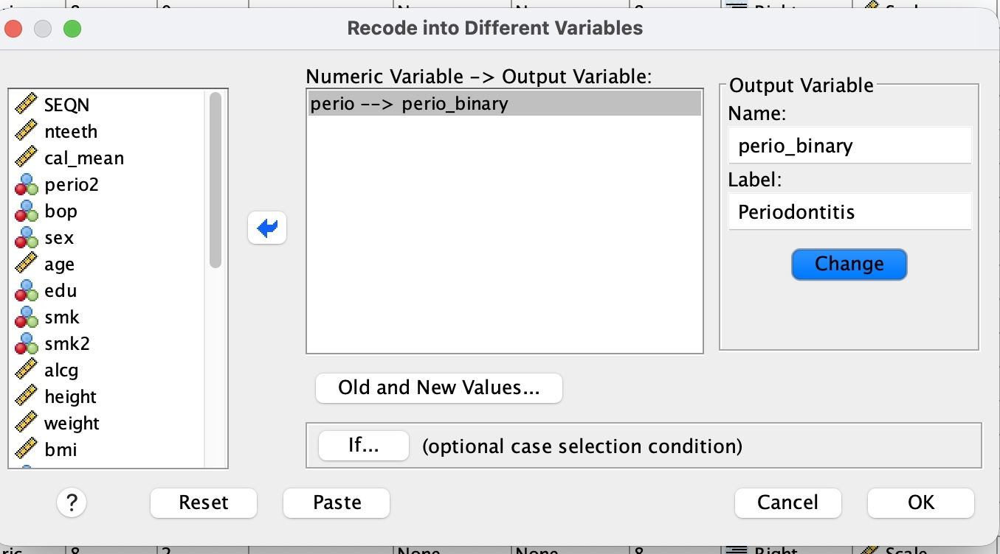
Schritt 3: Klicken Sie auf „Alte und neue Werte…“.
Schritt 4: Konfigurieren Sie die Werte:
- Unter Alter Wert: geben Sie
1ein >> Unter Neuer Wert: geben Sie0ein >> klicken Sie auf Hinzufügen. - Unter Alter Wert: wählen Sie Bereich, geben Sie
2bis4ein >> Unter Neuer Wert: geben Sie1ein >> klicken Sie auf Hinzufügen. - Unter Alter Wert: wählen Sie Alle anderen Werte >> Unter Neuer Wert: wählen Sie Werte kopieren >> klicken Sie auf Hinzufügen. (Damit werden fehlende Werte behandelt)
- Klicken Sie auf Weiter, dann auf OK.
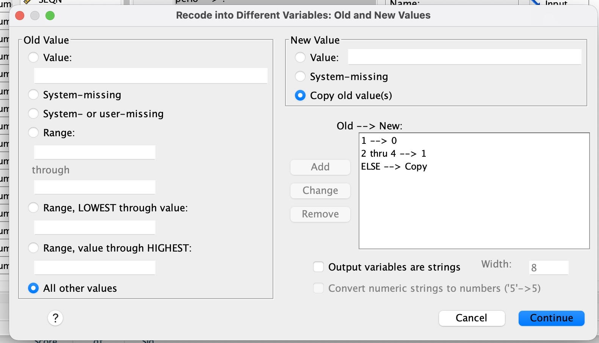
Hinweis: Stellen Sie sicher, dass Messniveau in der Variablenansicht auf Nominal gesetzt ist, Dezimalstellen auf 0 steht, und setzen Sie die Werte 0 = „Keine Parodontitis” und 1 = „Parodontitis”.
Damit erhalten Sie die binäre abhängige Variable perio_binary, die in den folgenden Aufgaben verwendet wird (0 = Nein, 1 = Ja).
Aufgabe 1 – Durchführen einer binär-logistischen Regression für „perio_binary” als Outcome
Aufgabe 1.1 – Regression mit nur „bmi” als unabhängiger Variable
Führen Sie zunächst eine Regression mit nur „bmi” als unabhängiger Variable durch.
💡 SPSS:
Analysieren → Regression → Binär Logistisch
Schritt 2: Abhängige Variable: perio_binary.
Schritt 3: Kovariaten: bmi.
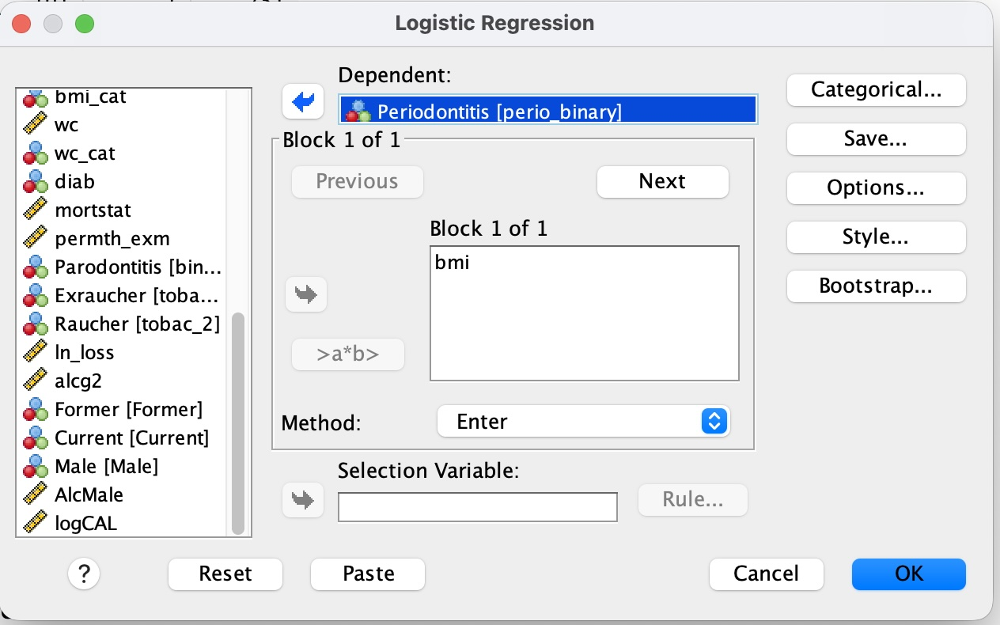
Ergebnisse der Aufgabe
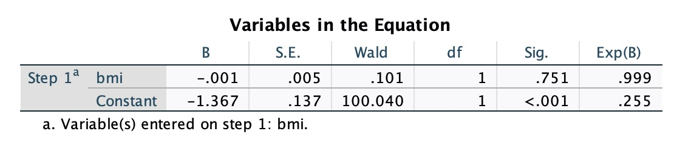
| Variable | Regressionskoeffizient B | Sig. | Exp(B) |
|---|---|---|---|
| bmi | −0,001 | 0,751 | 0,999 |
| Konstante | −1,367 | <0,001 | 0,255 |
Interpretation:
- Der Koeffizient für
bmiliegt praktisch bei null (B = −0,001), und der Effekt ist nicht statistisch signifikant (p = 0,751) – solange nurbmiim Modell ist, zeigt der BMI keine Assoziation mit Parodontitis. - Exp(B) = 0,999 bedeutet, dass ein Anstieg des BMI um 1 Einheit mit einem Rückgang der Odds für Parodontitis um 0,1 % verbunden ist – ein vernachlässigbarer Effekt, was zum nicht signifikanten p-Wert passt.
- Das Exp(B) der Konstante (0,255) entspricht den Odds für Parodontitis, wenn
bmi= 0 wäre; dieser Wert ist für sich genommen klinisch nicht sinnvoll interpretierbar (ein BMI von 0 kommt nicht vor), wird aber zur Definition der Modellgleichung benötigt.
Aufgabe 1.2 – Interpretieren Sie den SPSS-Output
💡 Hinweis: Sollten Sie Hilfe benötigen, finden Sie die Lösung dazu im Cheatsheet am Ende dieser Seite.
Aufgabe 1.3 – Regression mit mehreren unabhängigen Variablen
Fügen Sie die Variablen „age”, „bmi” und Ihre dummycodierten Variablen für Rauchen als unabhängige Variablen hinzu.
Hinweis: Wenn Sie Praktikum 5 bereits bearbeitet haben, besitzen Sie die dummykodierten Variablen für den Rauchstatus schon. Hier heißen sie Former und Current.

Ergebnisse der Aufgabe
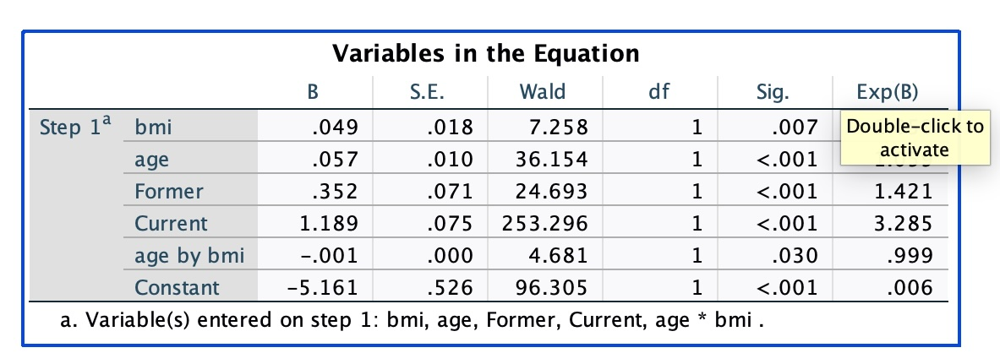
| Variable | Regressionskoeffizient B | Sig. | Exp(B) |
|---|---|---|---|
| bmi | 0,049 | 0,007 | 1,050 |
| age | 0,057 | <0,001 | 1,059 |
| Former | 0,352 | <0,001 | 1,421 |
| Current | 1,189 | <0,001 | 3,285 |
| age × bmi | −0,001 | 0,030 | 0,999 |
| Konstante | −5,161 | <0,001 | 0,006 |
Hinweis: Diese Ausgabe enthält bereits den Interaktionsterm age × bmi – Sie erstellen ihn explizit in Aufgabe 3, wo er auch ausführlich interpretiert wird.
In Aufgabe 1.1 war bmi allein nicht signifikant mit Parodontitis assoziiert (p = 0,751, Exp(B) ≈ 1). Im multivariablen Modell oben wird bmi statistisch signifikant (p = 0,007). Der Grund: age und bmi sind miteinander korreliert und beeinflussen beide das Parodontitis-Risiko – die Adjustierung für age entfernt einen Teil dieses Confoundings und macht den Effekt von bmi deutlicher sichtbar.
Aufgabe 2 – Modellvergleich
Vergleichen Sie nun mit dem Wissen aus Aufgabe 1.1, ob ihr neues Modell:
- Besser ist als das „Nullmodell”
- Die Wahrscheinlichkeit für eine Parodontitis besser beschreibt als Ihr Modell mit der einzigen Variable „bmi”
Betrachten Sie den Omnibus-Test der Modellkoeffizienten (Chi-Quadrat, df, Sig.) und die Pseudo-R²-Werte (Cox & Snell, Nagelkerke) der jeweiligen Modelle – wie diese zu lesen sind, erklärt das Cheatsheet weiter unten.
Ergebnisse der Aufgabe
Vollständige SPSS-Ausgabe (PDF)
| Modell | Omnibus χ² (vs. Nullmodell) | df | Sig. | −2 Log-Likelihood | Cox & Snell R² | Nagelkerke R² |
|---|---|---|---|---|---|---|
nur bmi (Aufgabe 1.1) |
0,101 | 1 | 0,751 | 7784,274 | 0,000 | 0,000 |
bmi + age + Former + Current (Aufgabe 1.3) |
509,947 | 4 | <0,001 | 7258,779 | 0,063 | 0,100 |
1. Ist das neue Modell besser als das „Nullmodell”?
Ja. Der Omnibus-Test für das multivariable Modell ist hoch signifikant (χ²(4) = 509,947, p < ,001) – die Hinzunahme von bmi, age, Former und Current erklärt den Parodontitis-Status deutlich besser als das Nullmodell (nur Konstante). Das univariable Modell mit nur „bmi” war dagegen nicht signifikant besser als das Nullmodell (χ²(1) = 0,101, p = ,751) – „bmi” allein bringt praktisch nichts.
2. Beschreibt es die Wahrscheinlichkeit für eine Parodontitis besser als das Modell mit nur „bmi”?
Ja, eindeutig. Da das „bmi”-Modell im multivariablen Modell geschachtelt ist, können wir beide mit einem Likelihood-Quotienten-Test vergleichen: Die Differenz der −2 Log-Likelihood beträgt 7784,274 − 7258,779 = 525,495, bei 4 − 1 = 3 zusätzlichen Freiheitsgraden (age, Former, Current). Das liegt weit über dem kritischen χ²-Wert für df = 3 (7,815 bei α = ,05), das multivariable Modell passt also signifikant besser. Das zeigt sich auch am Pseudo-R²: Das Nagelkerke R² steigt von ,000 (nur „bmi”) auf ,100 (multivariabel) – das Modell erklärt deutlich mehr der Variation in der Parodontitis, sobald „age” und Rauchstatus hinzukommen.
Hinweis: Die beiden Modelle werden auf leicht unterschiedlichen Stichprobengrößen geschätzt (7858 vs. 7848 Fälle) aufgrund fehlender Werte bei „age”/Rauchstatus – ein kleiner Vorbehalt für den Likelihood-Quotienten-Vergleich, der angesichts der Größe des Unterschieds die Schlussfolgerung aber nicht ändert.
Aufgabe 3 – Regression mit Interaktionsterm
Führen Sie die Regression mit einem zusätzlichen Interaktionsterm durch.
Um einen Interaktionsterm einzufügen, klicken Sie „age”, halten dabei die STRG-Taste gedrückt und drücken dann auf „bmi”. Klicken Sie dann auf das Symbol „>a*b>“.
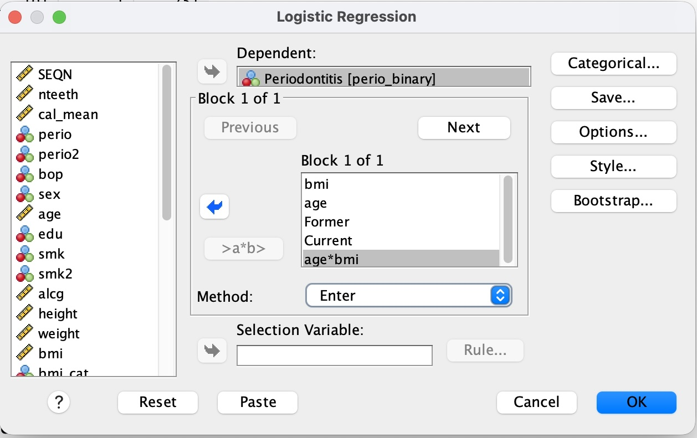
Ergebnisse der Aufgabe
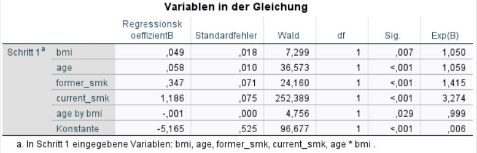
| Variable | Regressionskoeffizient B | Sig. | Exp(B) |
|---|---|---|---|
| bmi | 0,049 | 0,007 | 1,050 |
| age | 0,058 | <0,001 | 1,059 |
| former_smk | 0,347 | <0,001 | 1,415 |
| current_smk | 1,186 | <0,001 | 3,274 |
| age × bmi | −0,001 | 0,029 | 0,999 |
| Konstante | −5,165 | <0,001 | 0,006 |
Fragen:
Würden Sie den Effekt als winzig einstufen?
In welche Richtung wirkt die Effektmodifikation (oder anders: Wirkt das Übergewicht eines älteren Patienten genauso wie ein höherer bmi eines jungen Patienten?)
Ergebnisse der Aufgabe
Der Interaktionsterm
age × bmiist statistisch signifikant (p = 0,029), sein Exp(B) liegt mit 0,999 aber extrem nahe an 1. Die Größe der Effektmodifikation ist also winzig, auch wenn sie statistisch nachweisbar ist (was bei großen Stichproben häufig vorkommt).Der Koeffizient ist negativ (B = −0,001), das heißt der Effekt von
bmiauf die Odds für Parodontitis wird mit steigendemageetwas schwächer. Das Übergewicht eines älteren Patienten wirkt sich also nicht genauso aus wie ein höherer BMI eines jungen Patienten: Der gleiche BMI-Anstieg ist bei einem jungen Patienten mit einem etwas größeren Anstieg der Odds für Parodontitis verbunden als bei einem älteren Patienten. Das Alter schwächt den Effekt des BMI leicht ab.
Cheatsheet – Logistische Regression
Cheatsheet anzeigen
Einführung
Die (binär) logistische Regression wird angewandt, wenn ein Zusammenhang zwischen einer abhängigen binären und einer oder mehreren unabhängigen Variablen untersucht werden soll.
Im Unterschied zur linearen Regression ist die abhängige Variable jedoch binär (Herzinfarkt: ja oder nein, Zahn vorhanden: ja oder nein). Die unabhängigen Variablen sind hingegen min. intervallskaliert oder als Dummy-Variablen codiert.
Die binär logistische Regressionsanalyse untersucht den Zusammenhang zwischen der Wahrscheinlichkeit, dass die abhängige Variable den Wert 1 annimmt und den unabhängigen Variablen. Es wird also nicht der Wert der unabhängigen Variable vorausgesagt, sondern die Wahrscheinlichkeit, dass die Variable den Wert 1 annimmt.
Voraussetzungen
Die Voraussetzungen sind weniger restriktiv als bei der linearen Regression:
- Die unabhängige Variable ist binär (0 / 1 – codiert)
- Die unabhängigen Variablen sind metrisch oder im Falle kategorialer Variablen als Dummy-Variablen codiert
- Die Gruppen der kategorialen Prädiktoren sind ausreichend groß
- Die unabhängigen Variablen sind untereinander nicht hoch korreliert (Multikollinearität)
Die Methode ist im Gegensatz zur linearen Regression nicht die „least-squares method” sondern die „Maximum likelihood” Methode.
Darstellung (S-Kurve)
Darstellung in sehr abgekürzter Form (Blau = beobachtet 1, rot = beobachtet 0):
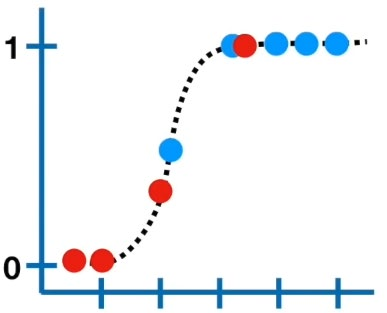
Wir benutzen die beobachteten Werte um die vorhergesagten Wahrscheinlichkeiten unserer S-Kurve zu berechnen. Blau (= 1) soll unser Modell mit einer möglichst hohen Wahrscheinlichkeit vorhersagen. Unser Modell sagt die Wahrscheinlichkeit für 1 vorher. Die Wahrscheinlichkeit für Rot (= nicht 1) ist dementsprechend (1 – Wahrscheinlichkeit für blau). Auch hier soll unser Modell möglichst exakt vorhersagen, ob 1 nicht eintritt. Die Maximum Likelihood berechnet sich anhand der einzelnen Wahrscheinlichkeiten:

SPSS führt diese Berechnungen mithilfe eines Algorithmus mehrfach aus und wählt die S-Kurve mit der höchsten Wahrscheinlichkeit.
Interpretation der Regressionskoeffizienten
Die Regressionskoeffizienten der logistischen Regression lassen sich nicht mehr gleich interpretieren, wie das bei der linearen Regression der Fall war. Allerdings ist die Interpretation eines Vorzeichens nach wie vor möglich. Ein positiver Regressionskoeffizient besagt, dass ein Anstieg der unabhängigen Variable mit einem Anstieg der Wahrscheinlichkeit für „Unabhängige Variable” = 1 einhergeht.
Zur genaueren Interpretation werden die „Odds Ratios” verwendet. SPSS bezeichnet die Odds Ratio einer Variable als „Exp(B)“:
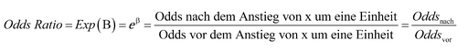
Eine 1 bedeutet hier keine Veränderung der relativen Wahrscheinlichkeit.
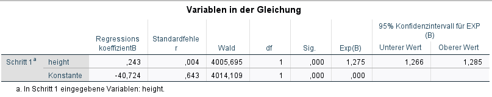
SPSS-Output interpretieren (Aufgabe 1.2)
Zunächst erstellt SPSS eine „Zusammenfassung der Fallverarbeitung”. Hier lässt sich überprüfen, wie viele Fälle bearbeitet oder ausgeschlossen wurden.
Unter „Block-0-Anfangsblock” erstellt SPSS ein Modell ohne die Variable „bmi”, stattdessen wird für die Schätzung lediglich der Modalwert (am häufigsten vorkommende Wert) verwendet. Dieses Modell dient lediglich als Vergleichsobjekt und kann zunächst ignoriert werden.
Unter „Block-1: Methode Einschluss” finden Sie nun folgende Tabelle:
Omnibus-Tests der Modellkoeffizienten
| Chi-Quadrat | df | Sig. | |
|---|---|---|---|
| Schritt 1 – Schritt | 426,935 | 1 | < ,001 |
| Block | 426,935 | 1 | < ,001 |
| Modell | 426,935 | 1 | < ,001 |
Der Omnibus-Test ist ein Chi²-Test, bei dem die „Aussagekraft” des von Ihnen formulierten Modells (mit „bmi”) mit dem „Nullmodell” aus Block-0 verglichen wird. „Schritt” und „Block” können Sie hierbei ignorieren. Ist der Wert Sig. unter 0,05, unterscheidet sich das neue Modell signifikant vom „Nullmodell”.
Unter „Modellzusammenfassung” finden Sie Angaben zur Modellgüte. Dazu werden für die logistische Regression Analogien zum R² der linearen Regression verwendet. Es gibt eine große Anzahl verschiedener solcher Pseudo-R², zwei davon sind in SPSS implementiert: das Cox und Snell R² und das Nagelkerke R².
Die „Klassifizierungstabelle” – Vorhergesagte Wahrscheinlichkeiten und beobachtete Werte: SPSS nutzt die Wahrscheinlichkeit von 50 % als Trennwert um festzulegen, ob der beobachtete Proband eine vorhergesagte Parodontitis (y = 1) hat. Der Schwellenwert kann verändert werden. Das Ergebnis kann der Tabelle entnommen werden.
Unter „Variablen in der Gleichung” sind die Variablen mit entsprechenden Koeffizienten aufgeführt – siehe das Beispiel oben.
Interaktionsterme und Effektmodifikation
Bislang sind wir davon ausgegangen, dass der zugrundeliegende Effekt unseres (primären) Prädiktors zwischen den Leveln der einzelnen Kovariaten gleich ist. Das muss allerdings nicht immer wahr sein.
Bei einer Effektmodifikation ist die Assoziation zwischen Risikofaktor und Outcome nicht konstant in den einzelnen Leveln der Kovariate. D.h. die Kovariate verändert den Effekt des Risikofaktors.
Grafisch betrachtet: Wenn die Beziehung zwischen Risikofaktor und Outcome unverändert über verschiedene Level der Kovariate ist, dann liegt keine Effektmodifikation vor.

Wenn eine Interaktion vorliegt, ist die Assoziation zwischen Risikofaktor und der Outcome-Variable nicht konstant bei unterschiedlichen Leveln der Kovariate.
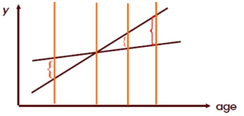
Um festzustellen, ob die Kovariate ein Effektmodifikator ist, erstellt man ein Modell mit einem Interaktionsterm („Variable a” × „Variable b”). Die Variable ist nur dann ein Effektmodifikator, wenn:
- Die Interaktion biologisch plausibel ist
- Der Interaktionsterm statistisch signifikant ist